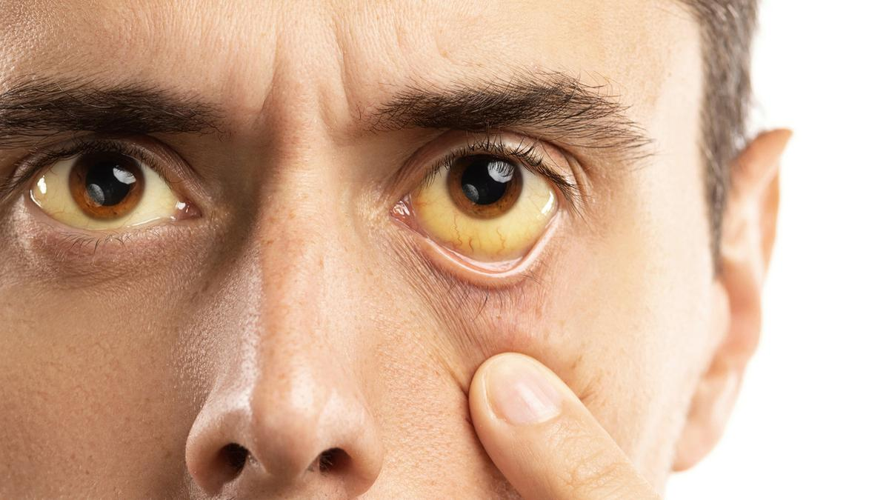

Apersepsi
Pernahkah kalian melihat orang yang matanya atau kulitnya berwarna kekuningan?

gambar: mata kuning
Pernahkah kalian melihat orang yang matanya atau kulitnya berwarna kekuningan?

gambar: mata kuning
KASUS: "Budi dan Badan yang Semakin Kuning"
Budi adalah seorang siswa kelas 9 SMP yang sangat aktif dan suka jajan. Setiap pulang sekolah, ia hampir selalu membeli berbagai macam jajanan di pinggir jalan, mulai dari gorengan, sosis bakar, cilok, hingga minuman boba dan es teh manis kemasan. Ia juga gemar mengkonsumsi mie instan yang dimasak hampir setiap malam, terutama saat belajar atau main game.
Akhir-akhir ini, Budi merasakan tubuhnya cepat lelah, tidak seperti biasanya. Ia juga mengeluh mual dan nafsu makannya menurun drastis. Ibunya mulai curiga karena mata Budi terlihat agak kekuningan, dan kulitnya pun tampak pucat kekuningan. Budi juga mengeluh perutnya bagian kanan atas terasa tidak nyaman dan sedikit nyeri jika ditekan.
Setelah diperiksa ke puskesmas, dokter menyarankan Budi untuk melakukan pemeriksaan darah. Hasilnya mengejutkan: kadar bilirubin dalam darah Budi meningkat sangat tinggi, dan enzim hati (SGOT/SGPT) juga berada di atas ambang normal. Dokter mendiagnosis Budi mengalami gangguan fungsi hati atau hepatitis, kemungkinan besar terkait dengan pola makan dan paparan zat kimia dari makanan yang sering ia konsumsi.
PERTANYAAN
Membentuk kelompok dan membagi tugas
Kegiatan Guru:
Membagi Tugas dan Peran:
HATI (HEPAR)
1. Apa Itu Hati Dan Mengapa Ia Sangat Penting?
Hati atau dalam istilah medis disebut hepar merupakan organ internal terbesar yang dimiliki oleh tubuh manusia. Beratnya mencapai sekitar 1,5 kilogram pada orang dewasa, atau kira-kira sebesar bola amerika, dan terletak di bagian kanan atas rongga perut, tepat di bawah diafragma dan di atas lambung serta usus. Jika kita meletakkan tangan di perut kanan atas dan menarik napas dalam, kita bisa merasakan tekanan dari hati yang terdorong ke bawah oleh paru-paru yang mengembang. Hati memiliki warna merah kecoklatan karena dipenuhi oleh pembuluh darah, mengingat organ ini menerima pasokan darah yang sangat besar, sekitar 1,5 liter darah setiap menitnya atau 25 persen dari total curah jantung. Posisinya yang strategis, tepat di jalur aliran darah dari usus menuju jantung, memungkinkan hati untuk memeriksa dan memproses semua zat yang baru saja diserap dari sistem pencernaan sebelum zat-zat tersebut diedarkan ke seluruh tubuh.
Hati sering disebut sebagai "pabrik kimia tubuh" karena perannya yang luar biasa kompleks dan beragam. Tidak seperti organ lain yang mungkin hanya memiliki satu atau dua fungsi utama, hati terlibat dalam lebih dari 500 proses biokimia yang berbeda. Ia bertugas memproses hampir semua zat yang masuk ke dalam tubuh, baik itu nutrisi dari makanan, obat-obatan yang kita konsumsi, maupun racun yang tidak sengaja kita papari. Tanpa hati yang berfungsi dengan baik, tubuh akan dengan cepat keracunan oleh zat-zat sisa metabolisme sendiri maupun oleh racun dari luar. Dalam konteks sistem ekskresi, hati berperan sangat penting karena ia bertugas "memproses" zat-zat beracun menjadi zat yang tidak berbahaya sebelum akhirnya dikeluarkan melalui ginjal atau usus. Hati adalah garda terdepan dalam sistem detoksifikasi tubuh. Bayangkan jika tidak ada hati, setiap kali kita makan makanan yang mengandung pengawet atau minum obat, racun-racun tersebut akan langsung beredar ke seluruh tubuh dan merusak sel-sel kita. Untungnya, hati hadir sebagai penyaring yang setia.
2. Anatomi Hati (Struktur Lengkap)
a. Lobus Hati (Belahan Hati)
Jika kita melihat hati secara makroskopis atau dengan mata telanjang, kita akan melihat bahwa hati terbagi menjadi dua bagian utama yang disebut lobus, yaitu lobus kanan dan lobus kiri. Lobus kanan berukuran jauh lebih besar dibandingkan lobus kiri, kira-kira enam kali lebih besar. Pembagian ini didasarkan pada letak ligamentum falsiformis, yaitu jaringan ikat yang membagi hati seperti sekat yang menggantungkan hati ke dinding perut. Selain kedua lobus utama tersebut, terdapat juga lobus kaudatus dan lobus kuadratus yang berukuran lebih kecil dan terletak di bagian bawah hati. Setiap lobus ini kemudian tersusun atas ribuan unit-unit fungsional yang lebih kecil lagi yang disebut lobulus hepatis. Pembagian lobus ini penting dalam ilmu bedah, karena ahli bedah dapat mengangkat satu lobus yang sakit sementara lobus lainnya masih berfungsi dan bahkan dapat beregenerasi membesar untuk menggantikan fungsi yang hilang.
b. Lobulus Hepatis (Unit Fungsional Hati)
Lobulus hepatis adalah unit struktural dan fungsional terkecil dari hati yang hanya bisa dilihat dengan bantuan mikroskop. Setiap lobulus berbentuk seperti prisma heksagonal atau segi enam, dengan diameter sekitar 1-2 milimeter. Jika kita membayangkan lobulus sebagai sebuah gedung perkantoran berbentuk segi enam, maka di setiap sudut segi enam tersebut terdapat saluran portal yang berisi tiga komponen penting: cabang arteri hepatika (pembawa darah kaya oksigen), cabang vena porta (pembawa darah kaya nutrisi dari usus), dan duktus biliaris (saluran empedu). Di bagian tengah lobulus terdapat vena sentralis yang berfungsi mengumpulkan darah setelah diproses oleh sel-sel hati. Susunan yang rapi ini memastikan bahwa setiap sel hati mendapatkan akses yang baik ke darah yang masuk dan saluran untuk mengeluarkan hasil produksinya.
c. Hepatosit (Sel Hati)
Komponen paling penting dari lobulus hepatis adalah sel-sel hati yang disebut hepatosit. Hepatosit adalah sel-sel parenkim hati yang melaksanakan hampir semua fungsi metabolik hati, mencakup sekitar 80 persen dari total populasi sel di hati. Sel-sel ini tersusun rapi membentuk lempengan-lempengan yang memancar dari vena sentralis ke arah tepi lobulus. Di antara lempengan-lempengan hepatosit ini terdapat pembuluh-pembuluh kecil yang disebut sinusoid, yaitu kapiler khusus tempat darah mengalir dan bercampur. Dinding sinusoid memiliki pori-pori besar sehingga darah dapat langsung kontak dengan permukaan hepatosit, memudahkan pertukaran zat. Hepatosit memiliki kemampuan regenerasi yang luar biasa; jika sebagian hati diangkat, sel-sel hati yang tersisa dapat membelah dan menggantikan jaringan yang hilang dalam waktu yang relatif singkat, bahkan hanya dalam beberapa minggu. Di dalam sitoplasma hepatosit terdapat berbagai organel seperti retikulum endoplasma yang berperan dalam sintesis protein dan detoksifikasi, serta mitokondria yang menyediakan energi untuk semua proses metabolik yang intensif tersebut. Hepatosit juga mengandung berbagai enzim, termasuk enzim-enzim yang akan kita bahas kemudian seperti SGOT dan SGPT yang menjadi penanda kerusakan hati.
d. Sistem Darah Hati
Keunikan hati terletak pada sistem peredaran darahnya. Hati menerima pasokan darah dari dua sumber yang berbeda, suatu keistimewaan yang tidak dimiliki organ lain. Sumber pertama adalah arteri hepatika, yang membawa darah kaya oksigen dari jantung langsung ke hati, menyumbang sekitar 25 persen dari total aliran darah hati. Darah ini terutama berfungsi memberi oksigen untuk metabolisme sel-sel hati itu sendiri. Sumber kedua adalah vena porta, yang membawa darah dari usus, lambung, limpa, dan pankreas, menyumbang sekitar 75 persen aliran darah hati. Darah dari vena porta ini kaya akan nutrisi yang baru saja diserap dari makanan, seperti glukosa, asam amino, dan lemak, namun juga bisa mengandung zat-zat beracun atau kuman yang ikut terserap dari usus. Kedua sumber darah ini bercampur di dalam sinusoid, kemudian mengalir perlahan melewati lempengan-lempengan hepatosit sehingga sel-sel hati memiliki cukup waktu untuk memproses zat-zat yang terkandung di dalamnya. Darah yang sudah diproses kemudian dikumpulkan di vena sentralis dan akhirnya keluar dari hati melalui vena hepatika menuju jantung untuk diedarkan ke seluruh tubuh. Sistem sirkulasi yang unik ini memastikan bahwa semua zat yang diserap dari usus harus "melewati pos pemeriksaan" hati terlebih dahulu sebelum mencapai organ lain.
e. Sistem Empedu
Selain sistem darah, hati juga memiliki sistem saluran yang disebut sistem empedu. Empedu adalah cairan berwarna kuning kehijauan yang diproduksi oleh hepatosit secara terus-menerus, sekitar 600-1000 mililiter setiap hari. Cairan empedu ini mengandung air, garam empedu, bilirubin, kolesterol, dan elektrolit. Empedu akan dialirkan melalui kanalikuli biliaris, yaitu saluran empedu kecil di antara sel-sel hati yang hanya bisa dilihat dengan mikroskop. Kanalikuli ini kemudian bersatu membentuk saluran yang lebih besar, lalu semakin besar, dan akhirnya membentuk duktus biliaris yang akan bermuara ke usus halus, tepatnya di bagian duodenum. Di antara waktu makan, ketika empedu tidak segera diperlukan untuk pencernaan karena tidak ada makanan masuk, empedu akan disimpan sementara di dalam kantong empedu (vesika fellea) yang terletak menempel di bawah hati. Kantong empedu ini akan memekatkan empedu dengan cara menyerap airnya hingga 5-10 kali lebih pekat. Ketika kita makan makanan berlemak, kantong empedu berkontraksi dan mengeluarkan empedu pekat ke usus untuk membantu pencernaan dan penyerapan lemak.

gambar: bentuk dan struktur hati
3. Fungsi-Fungsi Utama Hati
Hati memiliki beragam fungsi yang sangat vital bagi kelangsungan hidup. Fungsi-fungsi ini dapat dikelompokkan menjadi beberapa kategori utama yang saling terkait satu sama lain. Jika salah satu fungsi terganggu, maka fungsi lainnya juga akan terpengaruh.
untuk mempermudah pemahaman anda simaklah video berikut dengan mengklik link dibawah ini!
link: https://youtu.be/BtwX0K0SwZU
4. Hubungan Hati Dengan Organ Ekskresi Lainnya
Hati tidak bekerja sendiri dalam sistem ekskresi. Ia bekerja sama erat dengan organ-organ ekskresi lainnya dalam suatu sistem terintegrasi yang memastikan semua zat sisa dapat dikeluarkan dari tubuh dengan efisien.
Presentasi dan diskusi kelas
Kegiatan Guru:
Guru menjelaskan poin-poin kunci yang harus dipahami siswa:
Rangkuman Konsep:
Perizinan di bawah Creative Commons Attribution Share Alike License 4.0